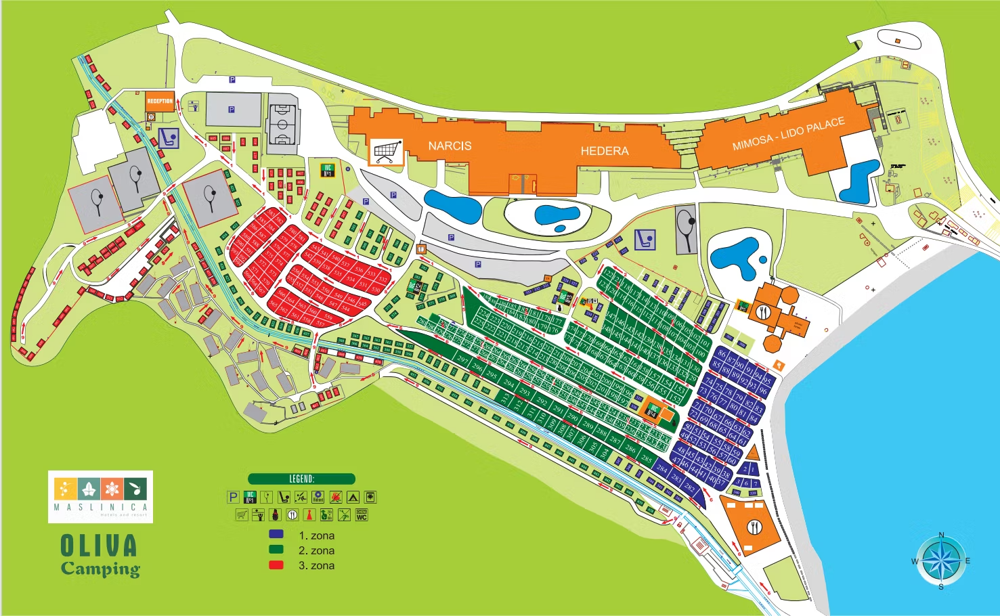

Camp Map for Oliva Camping 3★

Before

After
Project Overview
This project involved creating a detailed illustrated map for Maslinica Hotels & Resort, located on the Adriatic coast in Rabac. The challenge was the lack of an existing vector map—only a low-quality raster image of the resort was available. To overcome this, I manually retraced and redesigned the entire map, simplifying the layout and giving it a clean, modern aesthetic that reflects the resort’s elegant seaside atmosphere.
Tools Used
Adobe Illustrator for manual vector tracing and map illustration, Adobe Photoshop for initial image processing and color refinement.
Process
- Attempted vector conversion, but switched to manual redrawing due to low raster quality.
- Reconstructed layout from the reference image with improved proportions and clarity.
- Developed a modern, simplified visual style with clear labeling.
- Built a coastal-inspired color palette to match the resort’s brand identity.
- Finalized scalable SVG files for both digital and print applications.
Result
The completed map presents a clean, modern, and user-friendly representation of the resort area. The refined color palette and minimalist design improved overall legibility and aesthetic appeal, making it a strong asset for guest navigation, marketing materials, and digital platforms.
Close Window